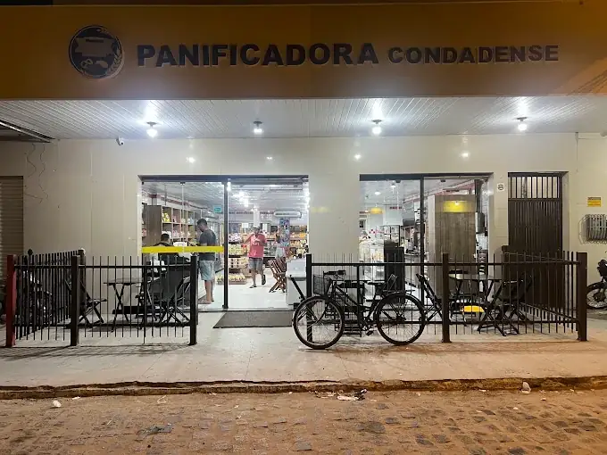
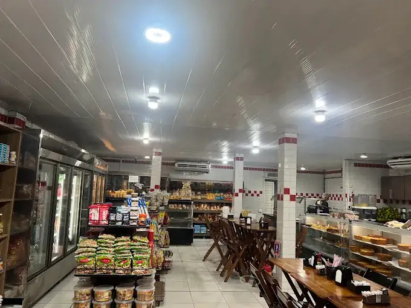
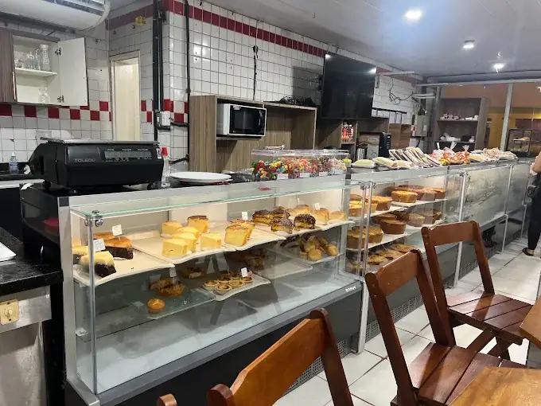
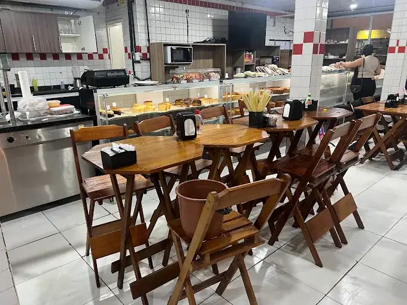
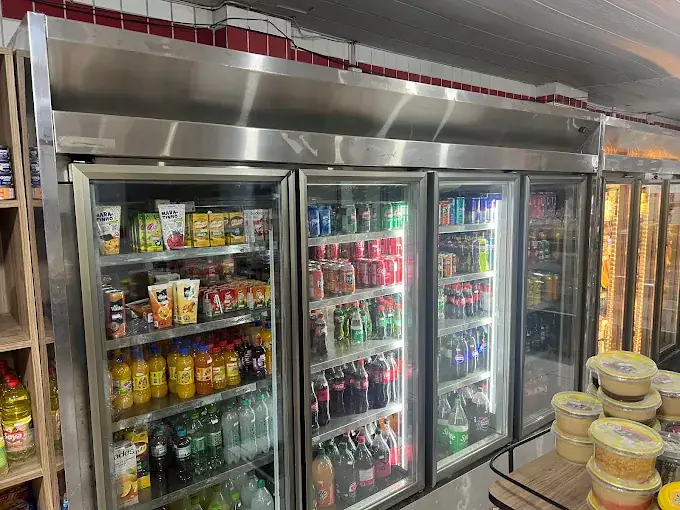
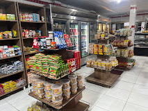
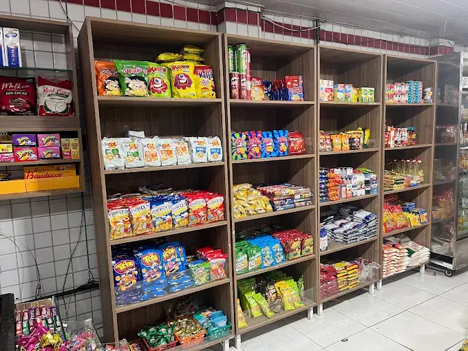
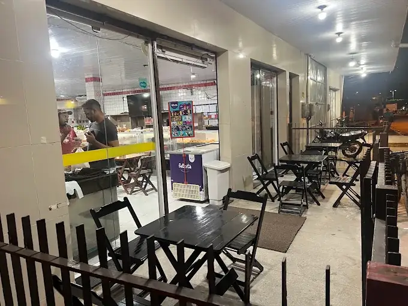

01
01Pães fresquinhos
Crocantes por fora, macios por dentro.
O cheirinho que acolhe
A Panificadora Condadense é uma padaria em Condado, Pernambuco, com pães, bolos e delícias preparados para fazer parte dos seus melhores momentos. Um pedacinho de carinho no coração da cidade.
Tem coisa melhor do que começar o dia com aquele pão fresquinho? Aqui, cada visita é uma oportunidade de levar para casa sabor, cuidado e aquele carinho que faz toda a diferença.
SAINDO DO FORNO
Do café da manhã ao lanche da tarde, encontre seus sabores favoritos na Condadense.
01Crocantes por fora, macios por dentro.
 02
02Um toque doce para celebrar a vida.
 03
03Perfeitos para matar a fome com sabor.
 04
04A pausa gostosa que o seu dia merece.
Essas categorias são uma prévia. Em breve, você poderá conferir por aqui os produtos e as especialidades da nossa casa.
POR DENTRO DA CONDADENSE
Conheça de perto nosso espaço, os detalhes e o ambiente que preparamos para receber você.








ACONTECE NA CONDADENSE
Acompanhe um pouco da nossa rotina, veja os registros da padaria e fique por dentro do que compartilhamos.
Quer ver o que está acontecendo por aqui?
Siga @panific.condadense ↗NOSSA ESSÊNCIA
A Panificadora Condadense faz parte da vida de quem vive e passa pelo centro de Condado. Queremos que cada pessoa encontre aqui não só produtos gostosos, mas também acolhimento e aquele atendimento próximo que tem gosto de casa.
Essa é a nossa essência: servir bem, cuidar dos detalhes e estar presente nos pequenos momentos do seu dia.
Venha nos conhecer →O JEITO CONDADENSE DE RECEBER
Produtos gostosos para acompanhar a sua rotina.
Um sorriso e uma boa conversa fazem parte da casa.
Estamos no centro, pertinho de você.
PALAVRAS QUE REPRESENTAM NOSSA CASA
Sempre encontro produtos fresquinhos e um ótimo atendimento!Ana Paula
Um lugar muito agradável para tomar um café e fazer um lanche.José Carlos
Gosto bastante da variedade de produtos. Recomendo!Maria Eduarda
A padaria é organizada e tem aquele atendimento acolhedor.Pedro Henrique
Ótima opção para quem está em Condado. Sempre vale a visita!Carlos Eduardo
VAI SER UM PRAZER RECEBER VOCÊ
Encontre a Panificadora Condadense em Condado, Pernambuco. Consulte o mapa e trace sua rota até aqui.
Traçar rota ↗PLANEJE SUA VISITA
Avenida Olegário Fonseca, 714
Condado – Pernambuco, Brasil
FALE COM A GENTE
Quer consultar produtos, encomendar ou tirar uma dúvida? Entre em contato. Vamos adorar falar com você.